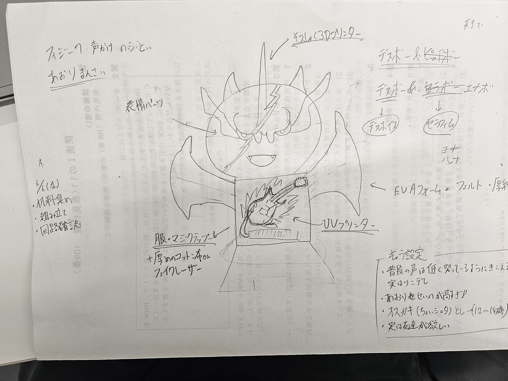
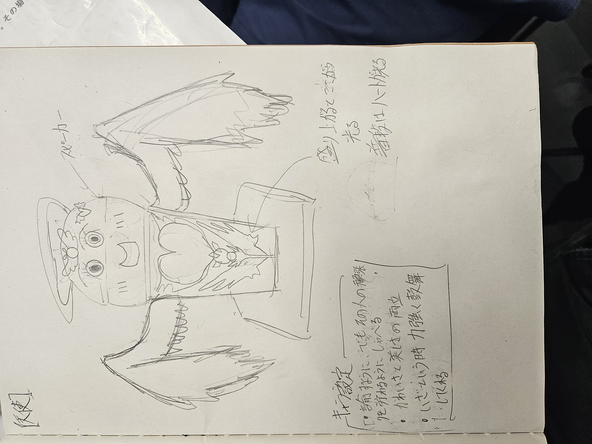
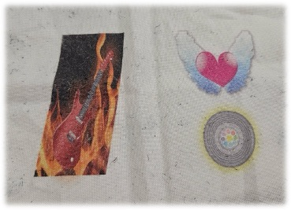

🎶
🎵
🎧
🎤
🎵
🎶
🎤
カラオケ人形「エナボ」
あなたの歌を応援してくれる天使モードの人形！可愛く盛り上げてくれるよ♪

カラオケ人形「デスボ」
歌にダメ出し！？でもなんだか憎めない、煽り担当の悪魔系キャラ！

1.概要
カラオケで盛り上げ役を担う。特定の言葉に応じて、声援が流れる。
更に光る。→❌光らない。
手順→①マイクで音を拾う→②制御版で音を認識→③拾った音をネット経由でパソコンに送る→④拾った音が何なのかPythonで処理
⑤拾った音が特定の言葉に反応→⑥特定の言葉に対応した録音を選択→⑦Arduinoに選択された録音を送信
⑧Arduinoからネットを通じて制御版に録音情報を送る→⑨スピーカーで録音が流れる。
2.プロセスメモ
■は考えないといけないこと、疑問等
○は具体的にやること
→はやったこと
Day1
🔳録音するのに必要な機材は？
→音声認識モジュールか、マイクセンサーとEsp32か
→○後者に決定。
■Esp32とスピーカーにどのように電力を供給するか
○リチウムイオン電池に決定したため、半田ごてを用いて、回路を作る必要あり
🔳材料は何がを買う？
○スピーカー、マイクセンサー、回路の制御盤を購入する
→,,,
Day2
■キャラのデザイン作成
○スケッチに描く
・命名-デスボー（デスボイスのデス）

・命名-ルナボー（月のラテン語ルナより）

■各パーツの素材はどうしよう
○羽は100均で揃うかも、ぬいぐるみ活モノモノのとこにあるかも
■頭部の装飾は3Dプリンタ、腹部はUVプリンタが必要か
Day3
○服のデザインを考えてUVプリントする

Day4
🔳人形の型は何で作ろう
○3Dプリンターを使う（ABS）
🔳どのパーツを作ろう
→・頭・体・台座
頭

体

台座

合体！！

Day5
■顔面のデザインはどうやって表現しよう
○ UVプリントを使う
■音を通して、しっかりデザインが写る素材を選ばなくてはならない
→ メッシュのポリエステルを採用
■素材のどの部分にデザインを写すのか決めるのが難しい
→カラオケで無料のマイクカバーを発見！、これならプリントする位置を図らなくていい！ 採用
○プリント実行
→イイ感じに写った

Day6
■どういう風に録音しよう
○悪魔は思いっきり声を出して狂気を演出、天使は諭すように、包み込むように優しく
→パソコンで実行 これは手ごたえあり 悪魔の方は音割れしまくったけど
■天使の顔は白のしたいが染色には何を使おう
○白のスプレー塗料か、ペンタイプのものにする。ので2つ購入。
→スプレーだと時間かかるしムラもできたので、ペンで塗った。それにUVで目をプリントした。
■デバイスの服の作成
○要らない服を切って使う それにUVした布を縫ってくっつける
→素材は予定通り 布は両面テープで接着


Day7
🔳外側のパーツは完成したので回路を作成
○部品をハンダで繋げる
↓完成した回路


使用したもの
・電池回路 ・EPS32 ・マイクモジュール ・アンプモジュール ・スピーカー
Day8
🔳コードの作成
○Pythonには、特定のキーワードと録音を入れておく。Arduinoは制御版（EPS32）とのやり取りのコードを作る。
🔳録音処理には、Flaskサーバーが必要
○チャットGPTをもとにサーバーの立ち上げをする。
⭐️ Flaskサーバー


Day9
🔳早速できたコードを試す
→何故か制御版（EPS32）とPythonをネットで繋げようとするとエラー（ループが起こる）
※恐らく電力不足かショートによるもの（ネットの接続は電力を大量に使う）

💦色々試すもEPS32がネットに繋がることはなかった
Day10
🔳代替案を考える必要がある（7/12日現在）
○回路全般の役割をスマホに置き換える。→パソコンに特定のワードを言うとスマホでワードに対応した録音が再生される!
🔳スマホとパソコンを繋げる手段んを考える。
→チャットGPTによると、パソコンとスマホを繋げるアプリ（Pushbullet）と自動で録音を流すアプリ（Tasker）が必要らしい。詳しくは↓


. ⭐️Pushbulletに通知が来るとTaskerで特定の操作が行われる（今回の場合は悪魔の声援.wavを再生）
3.使用したもの
・アプリ
・Tasker
・Pushbullet
・機材
電池回路→・バッテリーケース ・TP4056 ・18650リチウムイオン電池
マイク→・INMP441
制御装置→・EPS32
スピーカー→・MAX98357A ・小型ホームスピーカー
4.紹介動画
5.コード一覧
代替案
パソコンとスマホの連携app.py
失敗
PythonとArduinoのボツコード
6.特定のキーワードとセリフ
キーワード→悪魔モード（悪魔声援.wav）
おい、また来たのかよ。今日も“下手だけど楽しんでまーす”って顔で逃げんのか？カラオケ舐めてんのか？戦場だぞ、ここは！
お前の歌、音程探しの旅に出すぎだろ！GPSつけてこい！何回も聴いてるけどさ、逆にどうやったらそこまで外せるんだよ（笑）
そのヘロヘロの声、俺の睡眠導入剤か？違うだろ！聴いてる人間に“おっ”て言わせるのが歌だろ！目覚ませ、今が勝負だ！
声量ゼロ、感情ゼロ、存在感ゼロ！おい、幽霊か！？声張れって！生きてるなら叫べ！死んでるなら成仏しろ！
歌詞間違えた？知らねーよ！プロだって間違えんだよ！で？だからって萎えるのか？そこで止まるとか、甘すぎて虫歯できんぞ！
“俺、歌苦手なんで〜”って言うやつほどマイク手放さねぇんだよな。じゃあ黙れ！やれよ！震える声でも、全力で叫ぶやつだけが次のステージに進めんだよ！
キーワード→天使モード（天使声援.wav）
はーいっ！今日もあなたのステージが始まるよ〜♪ マイク準備OK？声はバッチリ？大丈夫、あなたの歌声、ちゃんと届くからねっ！」
「昨日ちょっと調子悪かった？でも今日は違う！もうね、声がキラキラしてるもん♪ ちょっとズレても、あなたらしさが一番大事なんだから！」
「その声、まるで朝の光みたいにふんわりしてて…聴いてるだけで心があったかくなるよ♪」
「うわぁ、そのビブラート、天使の羽が舞ってるみたい！……え？天使って私じゃん？そっかぁ〜（笑）」
「カラオケでテンション上がりすぎて、マイク思いっきり振っちゃうことあるよね〜！でもね、それすら絵になるって…あなた、アイドルかな？」
「次の曲も、あなたらしく楽しんでねっ♪ 音程よりも、気持ちを届けることが一番大事！あなたの歌で、今日も誰かが元気になるからっ♪」
キーワード→デスボ様、どうでしたでしょうか。→（終了ボイス 悪魔.wav）
おぉぃやり切った顔してんじゃねぇよ！死ぬまでテメェの戦いはおわんねぇんだよぉぉ
キーワード→ルナボさん、どうだった。→（終了ボイス 天使.wav）
お疲れ様でした。あなたの頑張っている姿、ずっと見ていましたよ
相棒
いずる